cyborg's sampan
1
silence - hiroshi yoshimura

The foetus pokes a raw finger through the membrane, and through that puncture begins to slip out, by digit, by limb, by torso, until it stands, in the middle of room, as though it had been there all along.